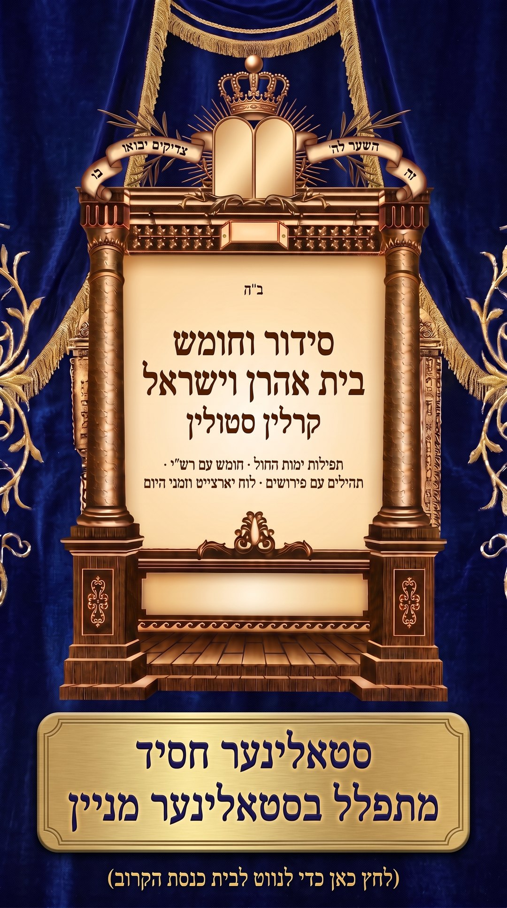

אשר ניסן בן לאה מליא לברכה ולהצלחה
רשימה כללית של צדיקים מכל הדורות. היא מוצגת לידיעה בלבד ואינה קובעת אמירת תחנון; "לוח תחנון" שלמעלה הוא של הסידור.
הזמנים מחושבים בסידור עצמו, לפי העיר שבהגדרות.
לחיצה על מילה מסומנת פותחת את רש"י עליה, במקום. טעמים, תרגום, מקרא פעמיים וכתב רש"י: בהגדרות.
מקרא ותרגום אונקלוס: נחלת הכלל. רש"י ושפתי חכמים: Metsudah Publications 2009, רישיון CC-BY. גור אריה, מזרחי, ברטנורא ומשכיל לדוד: נחלת הכלל. הטקסטים הדיגיטליים מתוך ספריא (sefaria.org).
סדר הלימוד היומי כפי שהוא בספר, מיום ראשון עד יום שישי (לסדר עצמו אין חלק לשבת): מקרא עם תרגום ורש"י, משנה, גמרא, זוהר, הלכה ומוסר.
נוסח קרלין סטולין · גרסה 2.38 · ניתן בחינם
הסידור, החומש, חוק לישראל, ספר תהילים ולוח השנה במקום אחד, בנוסח חסידות קארלין סטאלין.
הסידור מבוסס על תוכנת הסידור החינמי "תפילון" של אורי הולנדר, שנתן וחזר ונתן את הסכמתו ועזרתו.
את אפליקציית הסידור של קרלין סטולין יצר שלמה ווגשל, באישורו של אורי הולנדר. תודתנו נתונה לשניהם.
לכבוד ולזכר נשמת רבותינו הקדושים והטהורים מסטאלין קארלין נבג"מ ת.נ.צ.ב.ה.
ולזכות אשר ניסן בן לאה מליא לברכה ולהצלחה.
כל הזכויות שמורות.
כל מה שיש בסידור, בקצרה. לחיצה על נושא פותחת את ההסבר שלו.
ארבעה צעדים קצרים שמכינים את הסידור בשבילך: העיר, התצוגה, זמן התפילה ותזכורות מומלצות. אפשר לחזור לערכה בכל עת.
בטלפון ובטאבלט של אנדרואיד
העיר קובעת את זמני היום, את הלוח ואת מנהג ארץ ישראל או חוץ לארץ, בכל המסכים.
חיפוש ברשימה הכללית של יארצייט הצדיקים. לחיצה על תוצאה פותחת את היום שלה בלוח.
אפשר להצמיד תפילה או לימוד. לחיצה על ההתראה פותחת את הסידור ישר שם.
הזמנים מחושבים בסידור לפי העיר שבהגדרות, ולכן תזכורת לפי זמן זזה עם העונה.
זהו סידור וחומש בית אהרן וישראל, בנוסח קרלין סטולין. ארבעה צעדים קצרים והסידור מוכן בשבילך. אפשר לדלג, ואפשר לשנות הכל אחר כך בהגדרות.
העיר קובעת את זמני היום, את הלוח ואת מנהג ארץ ישראל או חוץ לארץ, בכל המסכים.
כך ייראה דף התפילה. בוחרים מה שנוח לעין.
שלוש אפשרויות שכדאי להכיר כבר עכשיו.
מסמנים את התזכורות הרצויות. אפשר לשנות או למחוק כל אחת מהן אחר כך, במסך "תזכורות".